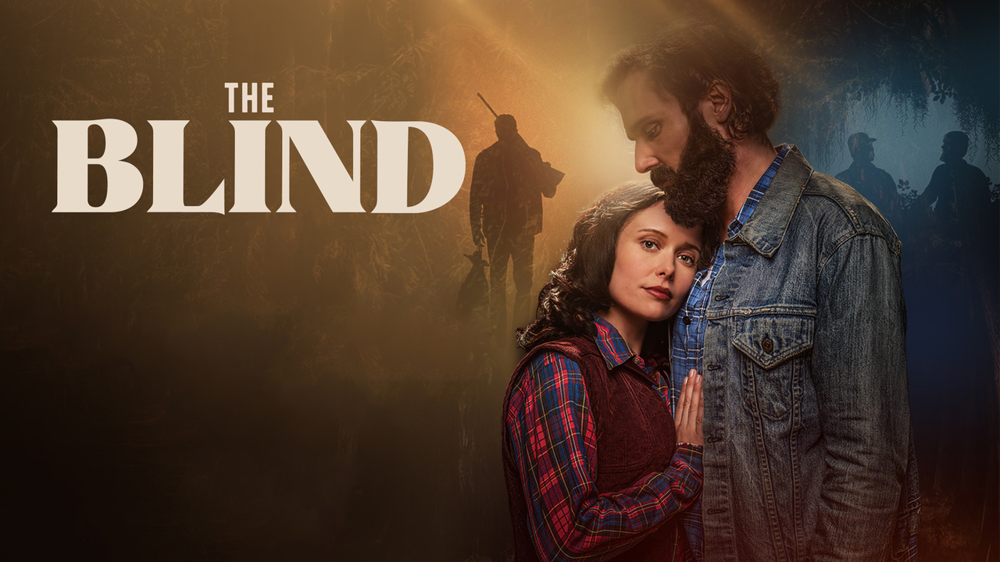
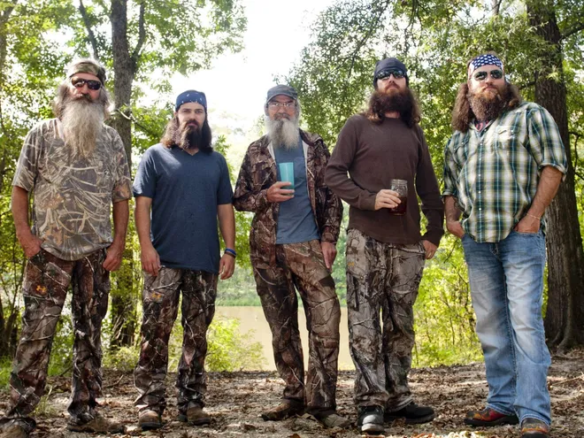
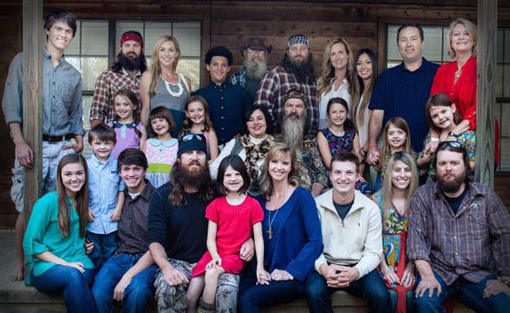

The Beginning of Duck Dynasty
While the Robertson family are very succesful today that was not always the case. Phil and Kay were highschool sweethearts and got married young with Kay never finishing high school. Phil was signed for a football scholarship through Lousiana Tech University where he eared his Master's in Education. After teaching for several years Phil eventually decided that his time was better spent in the woods. Through this time Phil became a drunk and caused a lot of issues within his family. Phil however persevered and turned his life over to the Lord and made changes for the better in the mid 70's. By this point Kay and their four boys had helped Phil take his small duck call business idea come true. Going from a tiny shop at home the Robertson's have now built a multi-million dollar enterprise. The Robertson's have recently released a movie sharing their hardships named, "The Blind". Phil, Jase, and Al the three eldest boys have also released a podcast named "Unashamed" that you can find on your preffered podcast network.

The Robertson family
The Robertson family is very extensive. To attempt to name the entire family would be a very long everchanging list. The best part of watching the show from beginning to end is being able to watch the family grow in every way. Below the Robertson Men are pictured. From left to right, Phil Roberston the father, Jep Robertson the youngest, Uncle Si Roberston Phil's brother, Jase Robertson the 2nd born, and Willie Robertson the 3rd born. The next image is a larger photo of the family, still with a few missing.
 